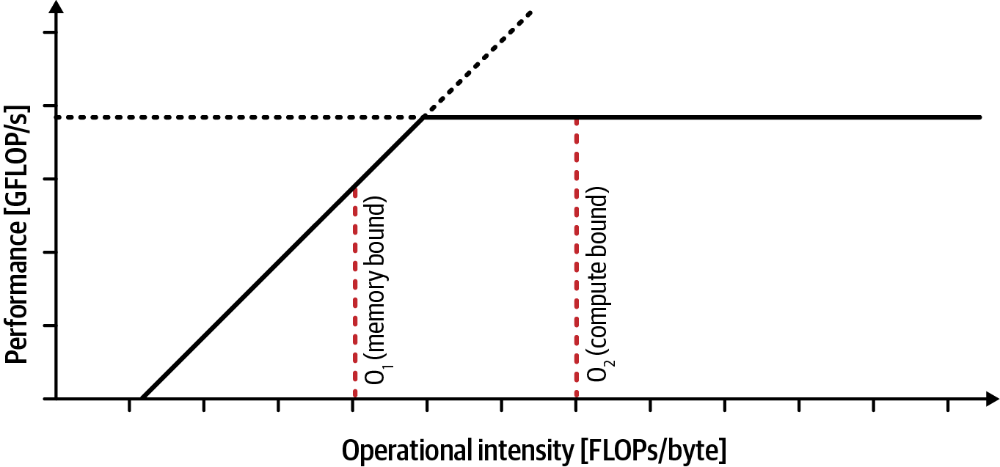
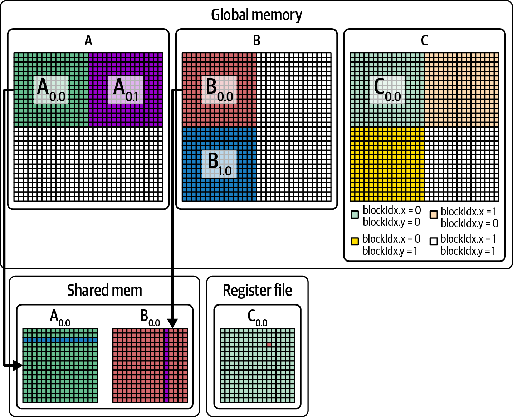
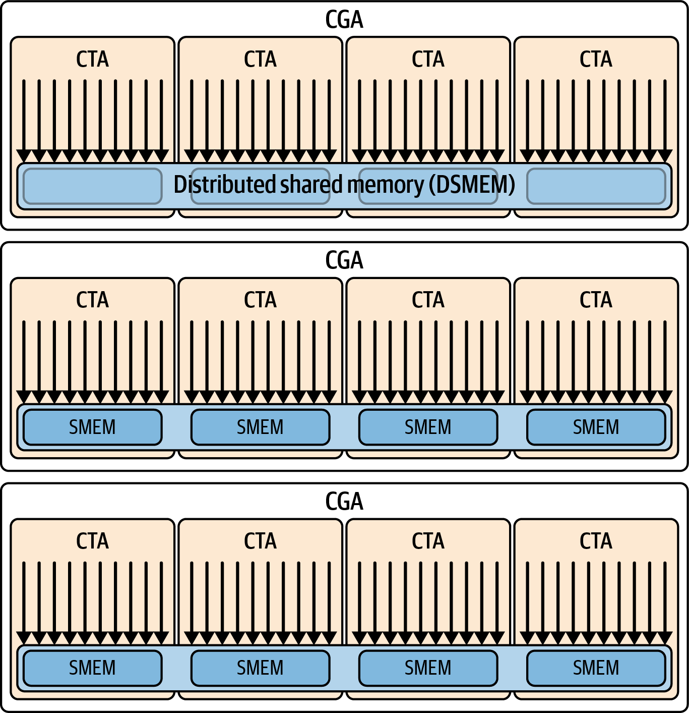
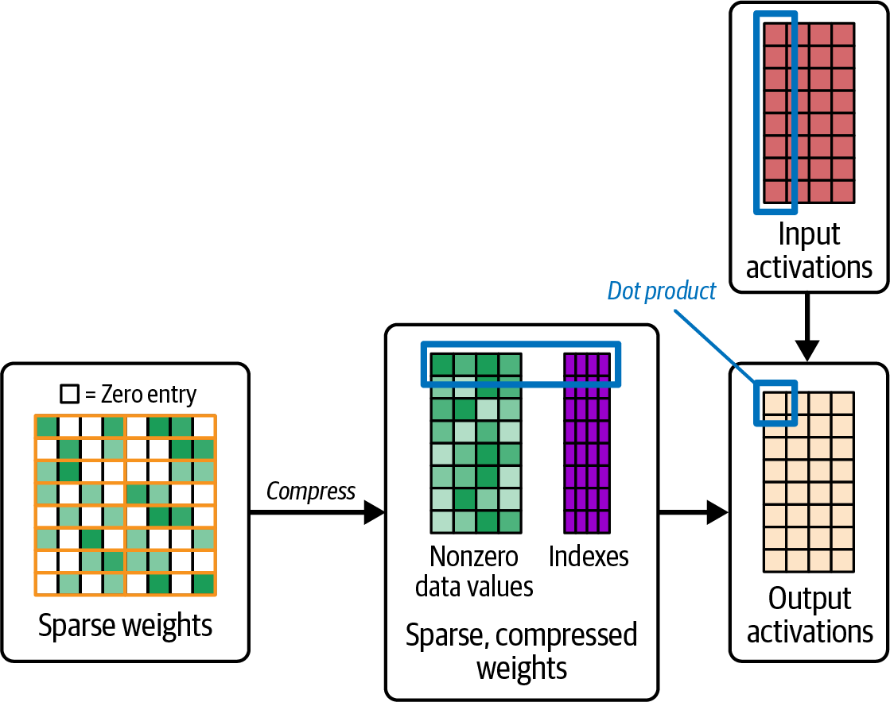
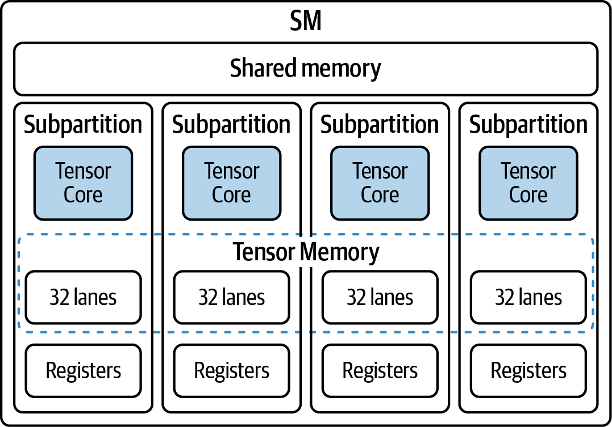
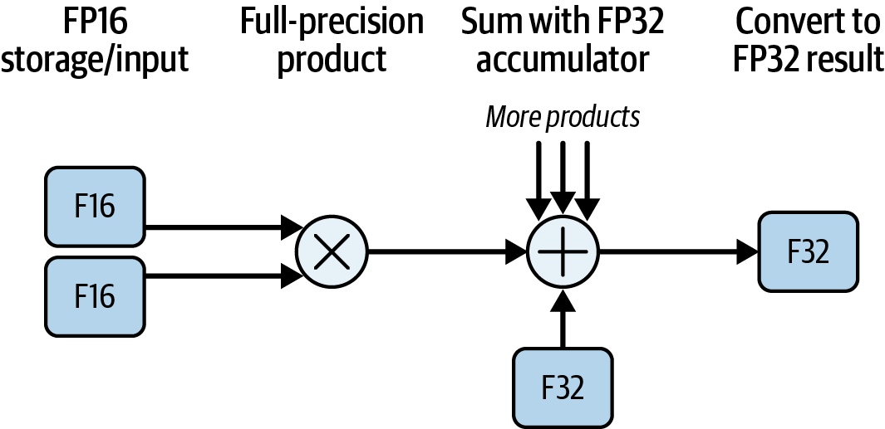
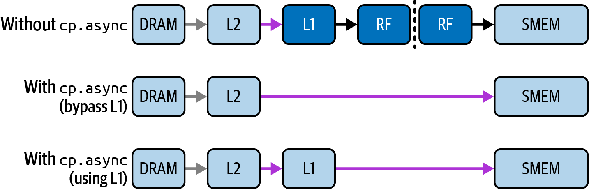

第 9 章. 提高 CUDA Kernel Efficiency 与 Arithmetic Intensity
即使用大量 parallelism 与较高 ILP 覆盖了部分 latency，kernel 性能仍可能受每次 memory traffic 完成多少有效工作的限制。Arithmetic intensity，也常称 operational intensity，通常表示相对于某一明确 memory level 传输的每 byte 数据所执行的 operation 数；对 floating-point workload 常写作 FLOP/byte，而不是 FLOP/s per byte。
许多新 GPU 的 peak compute throughput 增长快于 off-chip memory bandwidth，使 compute-to-bandwidth ratio 上升。提高 data reuse、减少不必要 traffic 因而更重要；但是否需要提高 arithmetic intensity，以及提高后能否利用更多 compute capability，仍取决于算法、所选 precision、实际 bandwidth 与其他 bottleneck。
Arithmetic intensity 是 Roofline performance model 的关键坐标。Roofline 把 achieved performance（FLOP/s）相对于 arithmetic intensity（FLOP/byte）作图，并用选定 memory bandwidth 与 compute throughput 构造 ceiling。它帮助判断测得点更接近 bandwidth roof、compute roof，还是远低于两者；后者还可能受 latency、occupancy、instruction mix 或实现效率限制。
实践中可使用 Nsight Compute 的 Roofline analysis view 等工具生成图表。解释结果时必须确认 FLOP 计数、byte 所属 memory level、dtype 对应的 compute roof 和实际 clock/configuration。随后可在每次优化后重新测量点的位置与端到端时间，而不是仅根据标签判定 memory-bound 或 compute-bound。
优化目标不是一律把 kernel 推入 compute-bound regime，而是接近适用于该算法和数据路径的 attainable roof，并缩短目标 workload 的时间。Roofline 可指导优先调查哪类 ceiling，但不能单独决定具体优化。
如前章所述，经典 Roofline 用水平线表示选定 operation/dtype 的 peak compute throughput，用从原点出发的斜线表示由某层 memory bandwidth 与 arithmetic intensity 决定的上限。Kernel 的 arithmetic intensity 决定横坐标，measured performance 可与这些 ceiling 比较，如图 9-1 所示。

图 9-1. Roofline model 示例（GFLOP/s 与以 FLOP/byte 表示的 arithmetic intensity）
Arithmetic intensity 较低的 kernel 在经典 Roofline 中更容易落在 bandwidth sloped roof 下，但“低”本身不证明 achieved performance 已受 memory bandwidth 限制；若带宽远未饱和，还可能是 latency、访问不合并、并行度不足或其他原因。
反之，较高 arithmetic intensity 只会提高 bandwidth roof 与 compute roof 的交点机会，不保证 kernel 已 compute-bound，更不保证 ALU 或 Tensor Core 接近 peak。Instruction mix、dependency、data layout、Tensor Core eligibility 和 occupancy 都会影响实际 utilization。
可行时应通过减少不必要的 global-memory byte、提高 data reuse 或融合 intermediate traffic 来提高 arithmetic intensity，而不是为了增大比值添加无用 computation。常见方法包括 loop tiling、利用 register/L1/shared memory 复用数据，以及 fusion 多个 kernel 以避免 intermediate result 往返 global memory。
PyTorch TorchInductor 等 compiler framework 可在支持的 graph、shape 和 backend 上执行某些 fusion、layout 与 code-generation 优化，从而减少 off-chip traffic 或提高 effective intensity；它不保证保持数据“最优复用”或始终优于 library/custom kernel。Developer 仍需 profiling 目标 workload，并只在必要时组合技术或编写自定义 CUDA kernel。
还可在数值要求和硬件支持允许时使用 FP16、FP8、FP4 等较低 precision，以减少每 element byte，并使用适用 Tensor Core 路径提高 compute throughput。若 operation count 的定义保持一致而 byte 减少，measured FLOP/byte 可能上升；但 lower precision 同时改变 compute roof、conversion/scaling/metadata traffic 与数值行为，不能笼统说会自动提高 arithmetic intensity 和性能。下面讨论这些技术。
并非每个 workload 都能轻易提高 arithmetic intensity，它受 algorithmic data movement lower bound、reuse opportunity、working-set capacity 和 correctness constraint 限制。可以评估 algorithm 改进、data reuse、operation fusion 与 batch/shape 调整，但更大 batch 不一定提高单 kernel intensity，也可能增加 memory footprint 和 latency；任何改写都必须保持可接受的数值与任务结果。
多级 Microtiling 与 Software Prefetching
如第 7 章所述，tiling（也称 chunking 或 blocking） 与 data reuse 是提高 arithmetic intensity 的常用方法。把 A/B 的 submatrix tile 从 global memory 加载到 shared memory，可让一次 off-chip fetch 服务多次 multiply-accumulate；收益取决于 tile shape、reuse、bank/layout、occupancy 与实际 cache behavior，不能只由“SRAM 更快”概括。
若一个 element 从 DRAM 加载一次后在片上复用 R 次，针对该 memory level 的 byte traffic 理想情况下可按复用程度 amortize，但 FLOP/byte 不一定严格乘 R，因为还存在 output、metadata、边界和其他 traffic。以典型 32×32×32 GEMM tile 为例，整个 output tile 包含 1,024 个 output element 和 32,768 个 multiply（或相应 FMA）；每个 A 或 B tile element 通常参与约 32 个 multiply，而不是原文所称的每个 shared-memory element 产生 1,024 个 independent multiply。
在 shared-memory tiling 之外，multilevel tiling 可进一步组织 register/shared-memory reuse并暴露 ILP。把 tile stage 到 shared memory 后，每个 thread/warp 可按 microtile 将所需 value 加载到 register；float4 与 <half2> 是原书示例，其中 CUDA 类型通常写作 half2 而不是带尖括号的模板形式。Vector type 只在 alignment、layout 与 codegen 合适时产生有利 vector access。图 9-2 展示了概念层级。

图 9-2. Global memory（DRAM）、shared memory（SMEM）与 register 之间的 multilevel tiling
这种 intra-SM reuse 的数据供给方向通常是 DRAM → SMEM → register，而 value 也可能在层级间写回或重新读取；原文的 register → SMEM → DRAM 顺序不能概括 tiling load path。填充 shared memory 时应尽量 coalesce global access，并在确有 conflict 时使用合适 padding/swizzle，相关内容见第 7 章；这些变换也有 capacity 与 instruction 成本。
Tensor Core inner loop 可通过 WMMA、MMA、CUTLASS 或其他 library/API 表达，实际 operand staging 依 architecture。TMEM 是特定 Blackwell compute capability 上的独立 address space，tcgen05 API 所对应的 tcgen05 instruction family 包含 MMA、copy、load/store 等不同 operation；不能笼统说 Tensor Core instruction 会把 shared memory 隐式 stage 到 TMEM，也不能外推全部现代 GPU。Compiler/library 可能管理部分资源，低层实现仍需遵守显式 allocation、operand layout 与 synchronization contract。Developer 也可在支持的 path 上使用 cp.async 或 TMA 把 tile 移入 shared memory。
相关技术是 software prefetching，常与 double buffering 结合：当前 tile 计算尚在进行时，提前发起下一 tile 到 shared memory 的 asynchronous copy。只有 copy 与 compute 能并行、buffer 生命周期和 barrier 正确、且资源压力可接受时，才能覆盖部分 DRAM → SMEM latency；它不保证 ALU 永不缺数据，也可能因增加 shared memory/register 使用降低 occupancy。
在 Grace Blackwell 等 CPU-GPU platform 上使用 Unified Memory 时，可用 cudaMemPrefetchAsync() 请求把 managed-memory region 预取到指定 location。具体 placement、migration path 与是否经 NVLink-C2C 依 topology、driver/runtime、allocation state 和 API 语义而定，不应保证一定迁页；prefetch 也不能替代正确 stream ordering/synchronization。有效 overlap 可能减少 on-demand fault stall，但不保证 ALU 始终有数据或 achieved FLOPS 提高。
Unified Memory 可简化某些数据管理，但性能取决于 access pattern、placement、oversubscription 和 platform coherence。Explicit cudaMemcpy 与 pinned host allocation 可提供更明确的 transfer schedule，却不“完全避免”所有 migration/transfer overhead，也不一定总优于 managed memory；应按目标 platform 实测。
总之，在有效 operation 不变的前提下，DRAM byte 在 register/shared memory 中复用越充分，针对 DRAM traffic 计算的 arithmetic intensity 通常越高。它会提高 bandwidth roof，但 measured kernel 是否更接近 compute-bound 仍取决于实际 traffic、compute utilization 与其他 bottleneck。
使用 Thread Block Cluster 进行 Tiling
在支持 cluster 的 GPU 上，可使用 CUDA thread block cluster 扩展 tiling 与 reuse；相关 cluster group API 属于 Cooperative Groups，详见第 10 章。同一 cluster 中的 thread block 可通过 distributed shared memory（DSMEM）访问彼此的 shared-memory segment，但各 block 仍拥有各自的 shared-memory allocation，并非共享一块无边界的单一 SMEM，如图 9-3 所示。

图 9-3. CGA 内各 CTA（thread block）可通过 DSMEM 访问 cluster 中的 shared-memory segment
下一章将详细介绍 CGA 与 thread block cluster。这里先说明它们如何在存在跨 CTA reuse 时减少 global-memory traffic，从而提高相对于 DRAM byte 的 arithmetic intensity。例如，TMA multicast 可把一次 bulk tensor transfer 的数据投递到 cluster 内多个 CTA 的目标 shared memory。图 9-4以四个 CTA 演示该机制；它要求支持的 architecture、合法的 cluster launch、tensor-map/layout、multicast mask 和同步协议。

图 9-4. 在 2 × 2 thread block cluster 中，通过 multicast 将 A、B tile 投递到四个 CTA（thread block）的目标 shared memory（来源：https://oreil.ly/EEO_O）
图中的 logical tile 工作由四个 thread block 协作完成；被多个 CTA 共同需要的 A/B region 可借助 multicast 避免每个 CTA 分别从 global memory 发起一份等价读取。数据仍会写入所选 CTA 各自的 shared-memory destination，因此“只取一次”应理解为理想化地减少源端 global-memory transaction，而不是 cluster 中仅保存一份 tile。
若 2 × 2 cluster 的四个 CTA 确实复用完全相同的数据，且基线原本会产生四份独立 DRAM traffic，multicast 对该部分 traffic 的理想降幅可接近 4×。实际 kernel 的总 global-memory byte 还包含不共享的 operand、output、metadata、边界与 cache effect，因此 arithmetic intensity 不会必然按 4× 提高，整个 GPU 的性能也不会按比例增长。后文将在 Tensor Core tiling 的语境中介绍一种专门形式 thread block pair。
在支持相应 nonportable cluster size 的 Blackwell 配置上，thread block cluster 可选择超过 portable 上限 8、最多 16 个 CTA；可用性还取决于具体 device、MIG/configuration、launch API 与 resource constraint。Kernel 必须通过 cudaFuncAttributeNonPortableClusterSizeAllowed 显式允许 nonportable cluster size，并应查询 runtime/device attribute，而不能仅按架构名称假定可用。更大的 cluster 可能扩大 reuse domain，也可能降低可同时驻留的 cluster 数；只有共享数据比例和传输模式理想时，局部 reuse 才可能接近 CTA 数，不能保证 16× arithmetic-intensity 或性能提升。应对目标 shape、occupancy、DSM/TMA traffic 与运行时间进行 profiling。
内核融合
提高 arithmetic intensity 的另一种方法是把多个 operation 或 loop iteration 融合到一个 kernel 中。若 intermediate value 能留在 register、shared memory 或 cache，而不必在 kernel 间写回并重新读取 global memory，同一批输入数据便可服务更多 computation。
类似地，上一章讨论的 loop unrolling可能让单个 thread 对已加载数据执行更多 calculation 并暴露 ILP，但并不自动产生 reuse，而且常增加 register lifetime、code size 与 register usage。Fusion 也可能提高 per-thread register pressure、shared-memory footprint 或 synchronization cost，从而降低 occupancy，因此需要权衡。
应对 fused kernel 做正确性与性能 profiling。若 register allocation 导致 spill 到 local memory，新增 memory traffic 可能抵消 fusion 收益；即使没有 spill，过大的 kernel 也可能受 occupancy、instruction-cache、launch geometry 或并行度限制。只有减少目标 memory level 的 byte 且有效 work 保持不变时，FLOP/byte 才会提高；这在 bandwidth 是真实限制因素时尤其可能有益。
现代 deep-learning framework可通过 JIT compiler 与 graph optimizer 对受支持的 graph pattern 执行 fusion、unrolling 和 code generation。例如，PyTorch 的 torch.compile，尤其是其 TorchInductor backend，可融合某些 elementwise operation sequence；是否融合取决于 graph break、shape、aliasing、device/backend 与 cost model。PyTorch compiler 将在第 13 章和第 14 章介绍。
Elementwise operation 也称 pointwise operation，对 tensor 的每个 element 独立应用同一种 computation。
若这些 elementwise operation 的 intermediate value 能保留在 register 或其他片上 storage，fusion 可消除相应 global-memory round trip，从而增加每个 DRAM byte 对应的有效 work。不过，是否真的“留在片上”由 generated code、live range 和 resource pressure 决定。
例如，朴素实现启动两个 kernel：第一个读取 x 并把 y 写入 global memory，第二个读取 y 并写入 z：
y=sin(x);z=sqrt(y);
这里的 intermediate value 需要一次 global write 和下一 kernel 的 global read，例如计算 sin(x) 后写出、计算 sqrt(y) 前读入。每个 kernel 只对每个 element 执行一个 transcendental operation，但不能仅凭 operation 个数断言其 arithmetic intensity “很低”：Roofline FLOP counting 对 special function 的处理依工具与约定，这类 throughput/latency 也不能等同于单条普通 ALU FLOP。对照之下，fused kernel 可在一次 logical pass 中完成两步：
z[i]=sqrt(sin(x[i]));
理想 code generation 下，每个 x[i] 只需加载一次，sin 的结果直接供 sqrt 使用，最后仅将 z[i] 写回。这样消除了 intermediate y 的 global write/read；DRAM traffic 会下降，但 point 是否靠近 compute roof 仍取决于 FLOP-count convention、special-function pipeline、memory traffic 与 achieved throughput。
若同一 thread block 内多个 thread 会复用数据，可把 shared memory 作为候选 staging location；但 hardware cache 可能已消除部分 redundant load，而显式 staging 会增加 copy、barrier、bank-conflict 和 capacity 成本。应比较 direct/cache path 与 shared-memory 版本的实际时间，不能假定它必然把 kernel 从 memory-bound 变为 compute-bound。
因此，这个 fusion 的明确收益是移除 intermediate materialization。不能说有效 FLOP 数因 fusion 而翻倍：fused 与 unfused 版本完成相同的 sin 和 sqrt；变化的是 byte traffic 和 launch overhead。Arithmetic intensity 应写作 FLOP/byte，并使用明确的 operation-count convention。
下面用一个更具体的例子说明。设二维 tensor x (shape [batch, hidden]) 的每一行需要做 L2 normalization。对每行 b，先计算 norm_b = sqrt(Σ_i x[b,i]*x[b,i] + ε)，再写入 y[b,i] = x[b,i] / norm_b，其中该式适用于所有 i。
一种 unfused pipeline 可分别用 kernel 计算 square、对每行 reduction 成 scalar，再做 normalization/divide。这需要多个 launch，并可能把 elementwise intermediate 写入 HBM 后重新读取；实际 byte 数取决于 reduction 实现、temporary layout 与 cache。
原文随后称有 4 个 kernel、每个仅 1 FLOP，并按每个 kernel 都有两次 float read 和一次 float write 得出 1/12 = 0.083 FLOP/byte。这与前述 three-kernel pipeline 不一致，也不符合 square、reduction、sqrt/rsqrt 和 normalization 各自不同的 operation 与 traffic；不能用该数值代表朴素实现。
可把这些阶段融合成单个 kernel，以减少 intermediate traffic 和 launch。下面保留原书给出的手写 fused kernel；它是说明性代码，后文将指出其 correctness 与计数限制：
__global__voidfusedL2Norm(constfloat*__restrict__x,float*__restrict__y,inthidden){extern__shared__floatsdata[];// reduction bufferconstintbatch=blockIdx.x;// one block per batch rowconstinttid=threadIdx.x;constfloat*batch_ptr=x+size_t(batch)*hidden;// 1) Accumulate sum of squares into shared memoryfloatlocal=0.f;for(inti=tid;i<hidden;i+=blockDim.x){floatv=batch_ptr[i];local=fmaf(v,v,local);// v*v + local}sdata[tid]=local;__syncthreads();// 2) Parallel reduction to sdata[0]for(intoffset=blockDim.x>>1;offset>0;offset>>=1){if(tid<offset)sdata[tid]+=sdata[tid+offset];__syncthreads();}// 3) Normalize (guard tiny norms)floatnorm=sqrtf(sdata[0]);floatinv=rsqrtf(sdata[0]);// prefer inversefloat*out_batch=y+size_t(batch)*hidden;for(inti=tid;i<hidden;i+=blockDim.x){// multiply by inverse (rsqrt) vs. divide by sqrtout_batch[i]=batch_ptr[i]*inv;}}
在这个 fused kernel 中，每个 thread 两次遍历自己负责的 x[b,*]：第一次累积 local sum of squares，第二次写出 normalized output。若第二遍输入没有由 cache 命中且忽略 reduction traffic，则 global traffic 约为每 element 12 byte（两次 float read 加一次 float write）；若输入仍在 cache，DRAM byte 可能更少，因此必须说明计数的 memory level。按常见 FLOP convention，FMA 计 2 FLOP，normalization multiply 计 1 FLOP，即每 element 约 3 FLOP，另有 reduction add。
按上述简化的 global-byte model，elementwise 主体约为 3 FLOP / 12 byte ≈ 0.25 FLOP/byte，但原代码并非每行只执行一次 sqrt/rsqrt；其 Roofline contribution 也不能写成简单的 1/(hidden * 12)。Block 中每个 thread 都计算 sqrt 和 inverse square root，且 unused sqrt result 随后未使用。Compiler 可能删除 unused work，但 remaining rsqrt 仍可能由每个 thread 执行。让每个 thread 处理多个 element 可提高部分 loop ILP 或 amortize overhead，但不会自动隐藏 duplicated special-function latency。
代码以 inverse sqrt（rsqrtf）后乘法代替逐 element division，这是常见 micro-optimization，但 throughput、precision、rounding 与 exceptional-value behavior 可能不同，必须按数值要求验证。代码还同时计算了未使用的 sqrtf；若 compiler 未完全消除相关 work，会造成浪费。更合理的方案可由一个 thread 计算一次 rsqrtf，而不是让所有 thread 重复 rsqrtf，再经 shared memory 或 warp/block collective 广播，并配合正确 synchronization。是否更快仍取决于 row length、block shape，以及 generated sqrtf/inverse-square-root instruction；“整体必然 memory-bound”也应由 profiling 证明。更多实现细节见本书的 GitHub repository。
与包含 HBM intermediate 的 three-kernel pipeline（square → reduce → divide）相比，fused version 可移除至少一组 global write/read round trip 和 kernel boundary。它通常减少 traffic 与 launch overhead，但不能据此保证 runtime “好很多”；收益取决于 shape、cache、reduction efficiency、occupancy 和 framework overhead。约 0.25 FLOP/byte 也只是特定简化计数，不是所有 memory level 上的固定值。
在合适 workload 上，单个 fused kernel 可能因较少 global traffic、较好的 locality 和较低 launch overhead 而快于多个独立 kernel；仍应针对真实输入与 reference result 测量，不能把可能收益写成普遍事实。
Fusion 的核心并非必然把 kernel 推向 compute-bound，而是避免朴素 multikernel version 在 stage 之间 materialize intermediate。示例的 per-thread local partial sum 保留在 register，随后只把每个 thread 的 partial 写入 shared memory 以完成 block reduction；这与“ai*ai 全程不离开 register”并不完全相同。
Reduction 使用 shared-memory partial sum，并在每个 offset 后同步。最终的 row sum 位于 shared memory，sqrt 或 inverse-square-root 可使用该 sum，normalization pass 再次读取 input 并写出 result。代码没有把定义中的 ε 加到 sum 中，因此 zero row 会使 inverse square root 为 infinity，随后 0 × infinity 可产生 NaN；它也隐含要求 reduction launch configuration 适合该 power-of-two halving algorithm。
因此，不能从这段代码严格得出 fused version 固定为 4 FLOP/12 byte、unfused version 固定为 4 FLOP/36 byte。FMA、tree-reduction add、special function、input reread、shared-memory traffic 和 intermediate buffer 都需按明确范围计数。可以可靠得出的结论是：fusion 能移除某些 HBM intermediate traffic 和 launch boundary，具体 DRAM byte、latency 与 speedup 应实测。
这个例子展示了 fusion 可能如何提高相对于 DRAM traffic 的 arithmetic intensity 并改善性能。下面转向利用 GPU Tensor Core hardware unit 的另一类方法。
高性能 GPU kernel 常采用 vertical fusion，把同一数据上的 sequential operation 合并；也可采用 horizontal fusion，把可共同调度或共享输入的 parallel operation 合并。NVIDIA CUTLASS 与 OpenAI Triton（PyTorch compiler backend TorchInductor 使用的 code-generation technology 之一）可帮助实现部分 fused pattern。是否使用 Tensor Core、TMEM 或 TMA 取决于 operation、dtype、layout、target architecture 与 generated kernel，并非 fusion library 自动具备全部硬件路径。
结构化稀疏性
在支持相应 sparse MMA path 的 NVIDIA GPU 上，2:4 structured sparsity可由 Sparse Tensor Core hardware 加速，cuSPARSELt 等 library 提供 compression 与 sparse matrix-multiplication API。2:4 通常表示沿规定维度的每组四个 value 中保留两个；具体 grouping、layout、dtype 和合法 shape 由 operation 与 software stack 规定，不能仅理解成任意 storage order 中“四个连续 weight”。把 dense model 约束或转换成这种 pattern 通常涉及 pruning。
把一半 weight 剪枝并压缩成受支持的 2:4 representation 后，kernel 可只存取和计算 retained value，并携带用于描述其位置的 metadata。相较于读取 dense zero 并执行 dense multiply，这可减少 weight byte 与无效 multiply；但 metadata、activation、output 和其他 traffic 仍存在，所以每次 load 的有效 nonzero 比例与总 memory traffic 不会简单地恰好改善 2×，如图 9-5 所示。

图 9-5. 2:4 structured sparsity 的 value 与 index/metadata compression
Structured sparsity 可通过 post-training pruning 与 fine-tuning 用于 inference，也可在训练或 retraining 过程中施加 mask/constraint；并非只能在模型训练结束后应用。Pruning、合法性检查、compression 和 format conversion 由 cuSPARSELt、framework tooling 或其他 software 完成。Hardware execution path 消费已经符合要求的 sparse representation，不会自动把任意 dense weight 变成保持精度的 sparse model。
Pruning 与 format conversion 通常由 cuSPARSELt 和 framework tooling 等 software 处理。在 PyTorch 中，可对满足其 dtype、shape、layout、device 和 backend 限制的 tensor 使用 to_sparse_semi_structured()，将已经符合 semi-structured pattern 的 dense tensor convert 为 compressed representation；该 API 本身不负责选择应剪除哪些 weight，也不保证任意 trained dense module 可直接转换或获得 sparse GEMM acceleration。
完成 conversion 并不意味着整个 model必然改用 sparse kernel；只有 supported operator、shape、dtype、layout 和 backend dispatch 匹配时，相关 matrix multiply 才可能调用 optimized sparse GEMM。Sparse Tensor Core 对特定 sparse MMA 的 dense-equivalent peak throughput 可达到对应 dense path 的约 2×，但 application speedup 通常更低，并可能为零；较大 problem/batch 有时可 amortize launch、packing 或 dispatch overhead，但也受 latency、workspace 和 memory capacity 约束。实际收益必须逐 operator 与端到端测量。
Batching 是提高某些 inference workload weight reuse、parallelism 与 launch amortization 的常见方法：一次处理多个 item 时，同一组 weight 可服务更多 activation computation。不过 batch 增大不保证单个 kernel 的 arithmetic intensity 上升，也可能增加 queueing latency、activation traffic 和 memory footprint。
足够大的 sparse matrix multiply 通常更容易提供并行 work，并 amortize metadata、compressed representation、dispatch 或 conversion overhead；small batch/problem 上这些成本可能占较大比例。但是否隐藏 overhead 取决于 kernel shape 与 implementation，而非 batching 自动保证。
2:4 sparsity 常在 transformer/LLM 中的大型 matrix multiply 上更有机会受益，因为这些 operation 可能满足 Sparse Tensor Core 的 tile、alignment 和 datatype requirement。Hardware 根据 compressed value 与 metadata 执行 supported sparse MMA，避免对应的 pruned multiply；所谓“同一 cycle budget 做两倍工作”是 dense-equivalent peak-throughput 口径，不代表所有 instruction、kernel 或 model 的实际 throughput 都翻倍。
Blackwell 的 compute roof 相对 HBM bandwidth 很高，使减少 weight traffic 具有潜在价值，但 structured sparsity 不会让 workload 必然“保持 compute-bound”。若压缩降低 compute work 和 byte 的比例不同，Roofline position 可能向任一方向变化；Grace Blackwell 上从 CPU memory 访问数据的实际路径、bandwidth 和 latency 也不能由 NVLink-C2C 的 peak link rate替代测量。目标仍是缩短 workload 时间，而非最大化一个 regime 标签。
把 50% weight 剪成 2:4 pattern 后，compressed weight value 的 payload 大致减半，但还要传输 metadata，activation、output 和其他 byte 也未消失。因此不能保证总 global-memory read 减半或 effective arithmetic intensity 接近 2×；还必须明确 numerator 是原 dense-equivalent work、实际 executed operation，还是 algorithmic useful work。
NVIDIA sparse MMA 对 operand 的 sparsity grouping、metadata encoding 与 supported shape 有精确定义；把它概括为“每 16 element 任意清零 8 个”会遗漏每组四个 value 的合法 selection constraint。其他 structured pattern 或 datatype 是否有 hardware/library acceleration 随 GPU architecture 与 software release 演进，也不能断言除 2:4 外任意 sparsity 永远没有特殊加速。
Sparsity speedup 只有在 task quality 仍满足要求时才有意义。Pruning 后通常需要 fine-tuning、retraining 或 calibration，并用目标 dataset 和 metric 验证 accuracy、robustness 与数值行为；不能只验证 kernel speed。
应用 sparsity 前，应先确认真实 bottleneck、operator support 和 dense baseline。Coalescing、tiling 与 pointwise fusion 是常见候选，但并非必须按固定顺序全部手工实施；optimized framework/library kernel 可能已包含这些策略。Structured sparsity 可作为 inference 优化候选，并须与强 dense baseline 比较。
Structured sparsity 常用于部署 inference，但“training gradient 不受益”不是普遍规则。Sparse training 是否加速取决于 forward、backward 与 optimizer 中哪些 matrix operation 有受支持 sparse operand，以及 mask/metadata 是否可维护；许多 stack 的 training support 确实比 inference 更有限，且 model-dependent、framework-dependent。应分别验证 training correctness、convergence、kernel dispatch 与端到端时间，不能从 inference support 推断 training support。
Recomputation 与 Memory 的权衡
如果目标瓶颈是 memory bandwidth 或 capacity，可考虑不存储或加载预计算值（例如 x²），而是在需要时 recompute。例如，在 register 中重新计算 x*x 可能比从 global memory 加载预先保存的 x² 更快，但前提是 x 已可用、expression 足够便宜、额外 dependency/compute 不成为新瓶颈。Recomputation 会增加 executed operation，并可能减少 memory traffic；它改变 measured arithmetic intensity，但不应为了提高比值而做无益计算。
某些 LLM inference implementation 会用 rematerialization 等策略降低 peak memory：不长期保存部分 large intermediate，而在稍后按需重算特定 activation 或 transformation。它在“用 compute 换 storage”这一点上类似训练中的 activation checkpointing，但训练 checkpointing 通常在 backward 时重算 forward activation，inference 没有相同的 backward 生命周期，二者不能视为同一机制。
Recomputation 可能降低 peak memory 或目标 memory level 的 traffic，从而允许不同 batch/sequence configuration；也可能增加 latency、energy、register pressure 或 compute contention。是否改善 FLOP/byte 与端到端时间取决于保存值的大小、重算成本、reuse count、cache behavior 和原始 bottleneck，应以 memory peak、traffic、correctness 和 runtime 联合判断。
PyTorch 与 Arithmetic Intensity
PyTorch 可通过 compiler 与 optimized backend 应用本章部分策略，但不是自动覆盖所有 operation。如第 13 章和第 14 章所述，PyTorch compiler 可对受支持 graph 中的某些 elementwise chain 和 reduction 做 fusion。Graph-level optimization 可能减少 launch 与 intermediate traffic；是否保留 locality/reuse 仍受 graph break、aliasing、dynamic shape、backend 与 cost model 约束。
PyTorch 会为许多 operation dispatch 到 cuBLAS、cuDNN 或生成的 kernel。例如，torch.matmul 可能使用内部含 tiling、register/SMEM staging 等优化的 library implementation，但具体 algorithm 可能使用 cache、register、shared memory 或其他路径，不能保证每次都以同一方式 tiling。PyTorch 的 scaled_dot_product_attention（SDPA）可依据 device、shape、mask、dropout 和 dtypes 等条件选择 FlashAttention、memory-efficient、math 或 cuDNN backend。可用 torch.nn.attention.sdpa_kernel(SDPBackend.FLASH_ATTENTION) 等 context manager 限制候选 backend，但若约束不满足，可能报错或无法使用所选 backend；应通过 profiler/log 验证实际 dispatch。
PyTorch compiler 能 capture 和 lower 的 operation coverage 取决于版本与 backend；data-dependent control flow、graph break、unsupported/custom operator 或 mutation/aliasing 都可能阻止 fusion。此时可先调整 graph 表达、注册 decomposition/custom operator，或在 profiling 证明必要时使用 custom kernel；manual fusion/tiling 不是唯一选项，也不保证更快。
编写 PyTorch workload 时，可优先评估 fused operator、optimized library call 与 compiler-friendly graph，避免不必要的大量 tiny kernel launch。例如可使用 torch.nn.functional 中合适的 activation 或 torch.matmul，而不是在 Python 中手工拆成许多小 operation。但 high-level API 不保证总调用单一高效 kernel，compiler 也不保证能与 surrounding operation 融合；应检查 graph、generated code 和实测时间。
PyTorch 的 nested tensor（也称 ragged representation）可表示 variable-length batch，减少显式 padding。具体 storage/layout 依 nested-tensor implementation 而定，并非所有 nested tensor 都只是一个无额外 metadata 的 packed buffer。NestedTensor 也不是完整等同于普通 dense Tensor 的全部 operator interface；它可避免部分 zero-padding compute/traffic，但 metadata、offset、alignment 与 irregular access 仍有成本，不能说 fetch 的每个 byte 都必然用于 arithmetic。
对 sequence length 差异较大的 LLM workload，nested tensor 可能减少 padding，并让受支持的 attention 或其他 operator 只处理有效 token。然而 operator coverage、backend、layout conversion、load balance 和 shape distribution 会决定实际效果；batch matrix multiply 也不会普遍自动支持或只读取“必要数据”。它可能降低 memory traffic，也可能引入 irregularity，不能保证 Roofline point 靠近 compute-bound 或 sustained throughput 上升。
使用 nested tensor 时应验证 operator coverage、autograd/compile/backend compatibility 与 performance。用具有代表性的 sequence-length distribution、attention pattern 和 batch size 检查端到端 correctness、conversion overhead、memory traffic、kernel time 与 latency，而不只测试单一理想 shape。
总之，PyTorch 提供 compiler fusion、optimized library、specialized attention backend 与 nested representation 等机制，它们可能减少 traffic、提高 reuse 或降低 launch overhead。应根据 workload 验证实际 dispatch、正确性与端到端时间，而不是假定它们都提高 arithmetic intensity。下面讨论 reduced-precision Tensor Core；lower precision 会同时改变 byte、compute roof 与数值行为，也需单独分析。
Mixed Precision 与 Tensor Core 利用
现代 NVIDIA GPU 的 Tensor Core 支持 TF32、FP16、FP8、FP4、INT8 等特定 reduced-precision matrix operation，但支持的 input、accumulator、shape 与 throughput 依 architecture 和 instruction 而异。Blackwell TMEM 是 Tensor Core data path 使用的独立 on-chip memory，容量和组织应按具体 compute capability/PTX 文档确认，不能把“每个 SM 固定 256 KB”无条件外推。TMA 可异步执行受支持的 global ↔ shared-memory bulk tensor transfer；tcgen05.mma 等 instruction 则按明确 operand/accumulator contract 使用 SMEM、register 与 TMEM，并非笼统地在 SMEM 与 TMEM 间隐式移动所有数据。TMEM accumulator 可在适用 kernel 中降低部分 register pressure，但效果取决于 tile、lifetime 和 code generation。
Lower precision 会改变 element byte、operation count convention 和可用 compute roof；Tensor Core path 也可能提高 matrix throughput。但这些特性不会保证把 memory-bound kernel 变成 fully compute-bound，也不存在普遍固定的 2×、4× 或 8× arithmetic-intensity 增幅。应先验证数值正确性，再在 Nsight Compute 中核对实际 instruction path、各 memory level byte、Roofline definition、throughput、stall 与端到端时间。
Nsight Compute 的 Speed of Light analysis汇总 compute/memory utilization；warp stall metric 与 cache metric 则来自不同 section，不能把 “Memory Throttle” 或 cache miss 简单称为 Speed-of-Light 的 memory-bound stall reason。使用 lower-precision Tensor Core 后，memory-related stall 不保证显著下降，因为 byte、instruction mix、occupancy、dependency 和新 bottleneck 都可能变化。Roofline chart 也只有在选对 dtype roof、FLOP count 和 memory level 时才可比较。
从 FP32 改为 TF32、FP16、FP8 或 FP4 Tensor Core kernel 后，warp-stall 百分比分布可能变化，但“memory stall 下降、dependency/pipeline stall 相对上升”既不是 arithmetic intensity 提高的充分证据，也不是从 memory-bound 转为 compute-bound 的必要模式。Stall reason 是归一化 sampling/issue-state metric；应结合 achieved bandwidth、Tensor Core utilization、executed instruction、byte count、Roofline position 与 runtime 判断。
用 TMEM 与 TMA 为 Tensor Core 供给数据
TMEM 是 Blackwell Tensor Core data path 的重要组成部分，属于独立 address space 的片上 memory；其容量与组织依具体 architecture，原文统一称每 SM 256 KB SRAM 过于宽泛。使用 high-level library 时，programmer 往往不直接管理 TMEM，但低层 PTX 实现需要显式 allocation/deallocation、layout、load/store 和 synchronization instruction，不能说一切都由 hardware 自动处理。TMEM 概念结构见图 9-6。

图 9-6. TMEM 可为 Blackwell Tensor Core accumulator 与相关数据路径提供存储，不应概括为完全取代 register
Blackwell 的 tcgen05.mma instruction 按具体 variant 从规定的 operand source 读取并把 accumulator 写入 TMEM。CUTLASS 等 library kernel 可生成所需 PTX，并管理 allocation、layout 与 synchronization。Transformer Engine 是支持低精度 format/scaling 的 software/hardware stack 概念，不能据此断言其所有 operation 都使用 TMEM。适用的 TMEM accumulator 可缩短部分 register live range，但 kernel 仍需 register 保存 address、control 和其他 value。
CUTLASS 等 high-level library 可封装大量 architecture-specific detail，应在适合时优先评估，但并非每个 CUTLASS kernel 都使用 tcgen05.*；选择取决于 target architecture、kernel schedule、dtype、shape 与 toolkit version。CUDA MMA intrinsic 或 CUTLASS GEMM 也不保证统一经过相同的 SMEM/TMEM movement path。TMA 执行受支持的 bulk tensor copy，而 tcgen05 family 中 MMA、copy、load/store 等 instruction 有各自显式 contract；不能概括成 Tensor Core instruction 自动隐式完成全部 shared-memory 与 TMEM transfer。
Nsight Compute 提供 Roofline 与 Speed-of-Light 等 analysis，可帮助比较 lower-precision Tensor Core path 前后的 ceiling、utilization 和 bottleneck；它们不能单独“确认” regime 转换，还需核对 metric definition、实际 instruction、byte、正确性和 runtime。
Tensor Core operand 与 accumulator movement 由所选 MMA/PTX contract 和 library schedule 决定，低层实现并非都“在幕后、无需显式代码”。Global-to-shared transfer 可在适用条件下使用 TMA 或 CUDA Pipeline API 中的 cuda::memcpy_async，并包含 <cuda/pipeline>；两者不是同义 API，实际 lowering 取决于 overload、alignment、shape 与 architecture。下面原书代码展示一个名义上的 two-stage cuda::memcpy_async pipeline，但不包含 Tensor Core compute，只保留 placeholder comment，因此不能证明 TMEM/Tensor Core overlap：
# two_stage_pipeline.cu#include<cuda/pipeline>#include<cooperative_groups.h>namespacecg=cooperative_groups;extern"C"__global__voidstage_ab_tiles(constfloat*__restrict__globalA,constfloat*__restrict__globalB,float*__restrict__outC,inttile_elems,intnum_tiles){// Alignment / size guards for vectorized copies (runtime parameter)assert((tile_elems%(32*4))==0&&"tile_elems must be multiple of 128 for float4 vectorization");// If you cannot guarantee 16B alignment or sizes, handle// the tail/ragged edges with a fallback 4B loop.extern__shared__floatsmem[];autoblock=cg::this_thread_block();// Shared buffers for double buffering of A and Bfloat*A0=smem+0*tile_elems;float*A1=smem+1*tile_elems;float*B0=smem+2*tile_elems;float*B1=smem+3*tile_elems;constexprautoscope=cuda::thread_scope_block;constexprintstages=2;__shared__cuda::pipeline_shared_state<scope,stages>pstate;autopipe=cuda::make_pipeline(block,&pstate);// Prime the pipeline with tile 0pipe.producer_acquire();cuda::memcpy_async(block,A0,globalA+0*tile_elems,cuda::aligned_size_t<32>{tile_elems*sizeof(float)},pipe);cuda::memcpy_async(block,B0,globalB+0*tile_elems,cuda::aligned_size_t<32>{tile_elems*sizeof(float)},pipe);pipe.producer_commit();for(intt=1;t<num_tiles;++t){// Stage the next A and B tilespipe.producer_acquire();cuda::memcpy_async(block,(t&1)?A1:A0,globalA+t*tile_elems,cuda::aligned_size_t<32>{tile_elems*sizeof(float)},pipe);cuda::memcpy_async(block,(t&1)?B1:B0,globalB+t*tile_elems,cuda::aligned_size_t<32>{tile_elems*sizeof(float)},pipe);pipe.producer_commit();// Consume the previously staged tilespipe.consumer_wait();float*prevA=(t&1)?A0:A1;float*prevB=(t&1)?B0:B1;// Perform compute using prevA and prevBpipe.consumer_release();}// Consume the final staged tilespipe.consumer_wait();intlast=(num_tiles-1)&1;float*lastA=last?A1:A0;float*lastB=last?B1:B0;// Perform compute using lastA and lastBpipe.consumer_release();}
启动该 kernel 时，dynamic shared-memory allocation 至少需容纳 4 x tile_elems x sizeof(float)，对应 A0、A1、B0 和 B1；还须满足 device limit、alignment 和 pipeline state resource。代码在进入 loop 前无条件 prime tile 0，所以要求 num_tiles 大于 0；它没有写入 outC，也没有实际消费 prevA/prevB 做 compute，不能称为完整 kernel。cuda::memcpy_async 是否与 compute 并行取决于合法 async path、producer/consumer sequencing、copy size、occupancy 与真实 compute duration。TMEM、SMEM 和 lower-precision tile 也不会自动保证“完全片上”或减少 stall。只有 pipeline 调优且 profiling 证明确有 overlap 时，cuda::memcpy_async 才可能隐藏部分 global-to-shared latency。
TF32 与 Automatic Mixed Precision（PyTorch）
支持 TF32 的 NVIDIA Tensor Core可用 FP32 的 8-bit exponent range 与 10 个显式 fraction bit（计入 implicit leading bit 时有效 precision 为 11 bit）执行特定 matrix operation。TF32 input 通常由 FP32 round 到较低 significand precision，它不是介于 FP32 与 FP16 之间的通用 storage dtype。相对 FP32 CUDA-core path，其受支持 matrix throughput 可能更高，但倍率依 GPU 与 operation。PyTorch 可设置如下 float32 matmul precision policy：
importtorchtorch.set_float32_matmul_precision('high')# {'highest'|'high'|'medium'}
设置后，torch.matmul、torch.nn.Linear 等符合条件的 float32 matrix multiply 可选择较低 internal precision 的高性能 algorithm，output dtype 仍可为 float32。high policy 不保证 dispatch 到 TF32，也可能依据 backend/hardware 使用其他允许的 internal algorithm；small shape、unsupported layout 或不同 device 也可能采用其他 path。应结合版本、backend policy、数值误差和 profiler 验证。
除 TF32 外，PyTorch 的 automatic mixed precision（AMP）中的 autocast 会依据 operator eligibility/policy，在指定 autocast dtype 与 float32 等类型间选择执行 dtype；它不是为每个 operation 搜索“最优”FP16/BF16，也不保证所有 result 都以 FP32 accumulate。BF16 与 FP32 具有相同 exponent bit 数，通常比 FP16 更不易 overflow，但 significand precision 更低，仍可能出现数值问题。CUDA autocast 的默认 dtype 通常为 float16；在支持的 GPU/backend 上可传入 dtype=torch.bfloat16 使用 BF16 policy。例如可用如下 context manager：
withtorch.amp.autocast("cuda",dtype=torch.bfloat16):output=model(input)
Autocast 是 PyTorch AMP/runtime dispatch 机制，并非由 TorchInductor 独自实施；TorchInductor（见第 13 章和第 14 章）可能在 compiled graph 中融合 conversion 或生成 mixed-dtype kernel，但不保证 large GEMM 全部使用 FP16/TF32 Tensor Core、所有 accumulation 均为 FP32，或 layer normalization/softmax 一律完整运行于 FP32。GradScaler 通过动态 scale loss/gradient 降低 FP16 gradient underflow 风险，但不能防止全部 underflow/overflow，也不修复 forward precision error。BF16 因 exponent range 较大，训练时通常不需要 GradScaler，仍应按 model 与 convergence 验证。
PyTorch AMP、operator implementation 与 compiler 可协同选择/传播 dtype，但 FP8 通常还需要专门 API、scaling recipe 或 library support，不能从普通 autocast 推断自动采用 FP8；FP16/FP8 compute 与 FP32 accumulator 也只是部分 operation 的 contract。Developer 仍需选择 autocast dtype、使用适当 scaler，并验证 unsupported/custom operation 和数值质量。图 9-7给出 mixed-precision MMA 概念示例。
Automatic mixed precision 可能以少量 code change 提升 Tensor Core eligibility、减少 operand byte 或 conversion overhead，但不保证最大化 arithmetic intensity。Fused Tensor Core kernel 是否减少 HBM round trip，以及是否把 operand stage 到 shared memory、把accumulator放入 TMEM，取决于 architecture、schedule、layout 与 generated instruction；TF32/FP16 等较低 internal precision 也不会自动改变所有 storage traffic。

图 9-7. Mixed-precision matrix multiply-accumulate（MMA）概念图
使用 structured sparsity、FP8 或 FP4 时，需要满足 operator 的 shape、alignment、tile、scale/metadata 与 backend requirement，并提供足够 parallel work。Small batch 可能使 conversion、launch、sparse metadata 或 irregular-access overhead 更显著，但 batch 并非唯一因素；M/N/K shape、sequence length、grouping、workspace 和 latency target 同样重要，TMEM/Tensor Core utilization 不能只由 batch size 推断。
例如，FP8 或 2:4 sparsity 在 batch size 1 的某些 GEMV/小 GEMM 上可能收益有限，也可能因 weight compression、specialized kernel 或其他维度足够大而受益。Batch size 128 或 256 同样不保证 fully utilize TMEM pipeline 或达到 near-peak throughput；应扫描实际 shape/configuration，并核对 dispatch、occupancy、Tensor Core utilization、memory traffic、accuracy 和 latency。
BF16/FP16、FP8 与 FP4 Reduced Precision
BF16 和 FP16已被多代 GPU 支持，但二者并非同一种 “half-precision” format：它们都是 16 bit，却采用不同 exponent/fraction 分配。现代 Tensor Core 对支持的 BF16/FP16 MMA 可提供高峰值 throughput，但 achieved performance 超过 peak 的 90% 或约为 FP32 peak 的 4×都不是通用规律；必须比较同一 device、dense/sparse 口径、operation、accumulator、clock 与 shape。较高 throughput 来自专用 matrix pipeline 并行执行规定 tile 的 MMA，而不是 source level 每 cycle 简单发射任意数量 FMA。
FP16 只有 5-bit exponent，较小 gradient 更容易 underflow，较大 value 也更容易 overflow。Static 或 dynamic loss scaling 可把 loss/gradient 暂时移到更可表示的范围，降低部分 underflow 风险；它不能保证 backpropagation 数值稳定，也不能补偿 forward quantization、overflow 或所有 reduction error。
BF16 与 FP32 都有 8-bit exponent，因此 normal exponent range 接近，通常比 FP16 少需要 loss scaling；但 BF16 只有 7 个显式 fraction bit，仍会发生 underflow、overflow、rounding 与 accumulation error。“天然避免 underflow”不成立，training accuracy 也不保证高于 FP16 或等同 FP32。
在原生支持 BF16 的现代 GPU 上，它常是 training 的候选，因为 exponent range 较大且通常无需 FP16 式 loss scaling。但最佳 dtype 取决于 model、optimizer、kernel support、throughput、memory 和 quality target；必须用 FP32/reference baseline 验证 convergence 与最终 metric。
FP8 可进一步减少 value payload，并在支持的 Tensor Core path 上提高 peak throughput。把 16-bit weight 压成 8 bit 会使未压缩 value payload 减半，但 scale/amax/metadata、activation、output、alignment 与其他 traffic 仍存在，因此总 HBM traffic 不保证减半。FP8 matmul 的 accumulator/output format 由具体 instruction/library recipe 决定，不能笼统写作 “FP32 或 TF32 accumulation”；TF32 通常描述 input compute precision而非 accumulator dtype。相对 BF16/FP16 的 2–3× TFLOP/s 也不是普遍 achieved ratio，应按 device、format、shape 和 scaling overhead 实测，并验证 task quality。
Transformer Engine 等 stack 支持 FP8，并可在相应 Blackwell/software configuration 上支持 NVIDIA NVFP4 microscaling format。NVFP4 使用 microblock scale 与更高层 scale 等信息改善有限 4-bit value 的 dynamic-range utilization，但不能保证 model 保持 accuracy。原书给出的 B200 10 PFLOP/s、FP32 约 80 TFLOP/s，以及 B300 15 PFLOP/s，只有在明确 SKU、boost/base clock、dense 或 structured-sparse、operation 与 marketing FLOP-count convention 后才能比较；这些 peak 数字的比值不是 application speedup，也不是“每个 weight 的 throughput”。应以目标产品的当前 datasheet 为准。
若 hardware、library、shape 与 quantization recipe 均支持，且 calibration/fine-tuning 后 model quality 达标，NVFP4 kernel 可能比 FP32 path 提供更高 matrix throughput和更低 value traffic；仍需逐 model、operator 和端到端 workload 验证 accuracy、latency 与 conversion/scaling overhead。
一个 256 × 256 的 packed 4-bit value tile 本身约为 32 KiB，但实际 kernel 还需另一 operand、scale/metadata、accumulator、pipeline stage 与 alignment space；tile 是否适配 TMEM/SMEM 由 instruction layout 和 architecture resource limit 决定，不能仅以“256 KB per SM”推导 reuse 或 performance。Low-precision input 的 unpack、scale、convert 与 accumulation 也不一定全部自动完成或采用 BF16/FP16/FP32 任一 accumulator；必须遵守所选 MMA API 和 library recipe。
降低 storage precision 可减少每 element payload，并可能提高支持 instruction 的 peak operation/byte，但 algorithmic arithmetic intensity、executed FLOP 定义、scale/metadata traffic 与 output byte 会同时变化，不能说每降一级 precision 就必然翻倍或四倍。TMEM/TMA 也只可能在合法 pipeline 中重叠部分 movement 与 compute，不保证把 memory-bound kernel 变成 entirely compute-bound或完全利用 multi-PFLOP Tensor Core。正确目标仍是满足数值要求并缩短目标 workload 时间。
用于 Inference 的 INT8 Reduced Precision 与 DP4A Instruction
部分 LLM inference workload可在 calibration、quantization-aware training 或合适 scaling 后使用 INT8，但可接受性取决于 model、layer、activation outlier、quantization granularity 与 quality target，不能假定 LLM 通常都能无损容忍。GPU 可通过 DP4A packed dot-product instruction 或支持的 integer Tensor Core MMA 加速相应 operation。DP4A 从两个 packed 32-bit operand 取四对 signed/unsigned 8-bit value，执行四次 integer multiply 并累加到 32-bit accumulator；把“一条 DP4A”与“一条 FP32 FMA”比较不能直接得到 throughput 倍率，因为 issue rate、pipeline、lane semantics 和 instruction count 不同。
相对于 dense FP32 weight，raw INT8 weight payload 从每 element 4 byte 降为 1 byte，即 payload 减少 75%；但 scale、zero point、group metadata、activation、output、alignment 和其他 traffic 仍存在，total memory traffic 不一定下降 75%。INT8 inference 可能受益于更高 integer Tensor Core peak 和较低 weight bandwidth，但也可能受 quantize/dequantize、unsupported operator、小 shape 或 memory/launch overhead 限制。“GPU 每秒从 memory 处理约 4×更多数据”混淆了相同 byte/s 下的 element count 与 achieved bandwidth，不能作为 speedup 结论。TMEM/TMA 只适用于特定 architecture 和 data path，也不能保证 data movement 与 compute 完美 overlap；应验证实际 kernel、byte、Tensor Core utilization、accuracy 和端到端 latency。
深入理解 Transformer Engine 与 TMEM
NVIDIA Transformer Engine把支持低精度 format 的 Tensor Core capability 与 scaling、casting、recipe 和 high-level software library 结合起来；它不是所有现代 NVIDIA GPU 上同一种独立 hardware block。cuBLASLt、cuDNN、CUTLASS 或 Triton kernel 可能使用 cp.async、TMA 或其他 load/copy path，取决于 architecture 与 schedule；Tensor Core instruction 也不会统一隐式完成全部 SMEM ↔ TMEM movement。
TMEM 是特定 Blackwell compute capability 的独立 on-chip memory/address space，不应再次概括为所有 Blackwell 每 SM 固定 256 KB、完全替代 register 的 result buffer。High-level application 通常不直接操作 TMEM，但 low-level PTX/library kernel 必须生成 allocation/deallocation、layout、MMA、copy/load/store 与 synchronization instruction；hardware 不会仅因调用任意 MMA 就自动完成全部 allocation 和 transfer。
使用 MMA instruction 时，参与 thread 的粒度可能是 warp、warpgroup、CTA pair 或其他 architecture-defined collective，不能统一称“每个 warp 直接驱动 Tensor Core”。WMMA、MMA 和 high-level API 对 fragment、operand layout、register mapping 与 synchronization 的抽象程度也不同；programmer 或 library 仍需满足对应 contract。
PyTorch ecosystem 的 INT8 quantization可通过 TorchAO、framework integration 与 vendor backend 等实现，具体 API/support 随版本变化。Quantized module 可能 dispatch 到 dedicated INT8 kernel，也可能 fallback、dequantize 或采用其他 representation。cuBLASLt/CUTLASS 只提供 Tensor Core eligible implementation 的可能性，不能确保实际 Tensor Core utilization；shape、dtype/layout、alignment 和 selected algorithm 都需验证。
启动 Tensor-Core-based kernel 或 CUTLASS 等 GEMM 并不保证 operand 一律经过 shared memory 与 TMEM，也不保证 Tensor Core 始终有 ready tile。Library implementation 会按 architecture、schedule 和 resource constraint 生成 movement/pipeline；application 层可能不直接分配 TMEM，但 library/kernel code 仍需管理它。
Transformer Engine workflow 不是由 firmware 在任意 MMA call 后自动安排。High-level framework/library 先依据 recipe 选择 format、scale 与 kernel，selected kernel 再按自身 schedule 使用 TMA 或 cuda::memcpy_async 等 mechanism。tcgen05.mma 具有明确 operand/accumulator location contract，而不是笼统隐式搬运 SMEM/TMEM。Weight 与 activation 能否使用 FP8/FP4 取决于 hardware、operator、scaling scheme 与 quality；FP16/FP32 也不是无代价的简单 fallback。
Tensor Core MMA 支持的 input/accumulator combination 依 instruction，例如某些 FP8 或 FP16 operation 使用更高 precision accumulator。Blackwell 某些 tcgen05 MMA 的 accumulator state 位于 TMEM，但不能外推为全部 Tensor Core operation 或 BF16/FP16/FP32 partial sum 都在 TMEM。State 通过 tcgen05 family 的显式 instruction 与 synchronization protocol 访问，并非 hardware 对 low-level code 完全透明。
Custom tile loop 可尝试以 cuda::memcpy_async 和 CUDA Pipeline API overlap movement 与 compute。下面原书清单仅为不完整 sketch：它没有实际 Tensor Core compute，并包含 compile/bounds 问题，因此不能直接使用：
#include<cuda/pipeline>#include<cooperative_groups.h>namespacecg=cooperative_groups;extern"C"__global__voiddouble_buffer_a(constfloat*__restrict__globalA,inttile_elems,intnumTiles){__shared__floattileA0[TILE][TILE];__shared__floattileA1[TILE][TILE];autoblock=cg::this_thread_block();constexprautoscope=cuda::thread_scope_block;constexprintstages=2;__shared__cuda::pipeline_shared_state<scope,stages>pstate;autopipe=cuda::make_pipeline(block,&pstate);// Prime pipeline with tile 0pipe.producer_acquire();cuda::memcpy_async(block,&tileA0[0][0],globalA+0*tile_elems,cuda::aligned_size_t<32>{tile_elems*sizeof(float)}pipe);pipe.producer_commit();for(intt=1;t<numTiles;++t){// Stage next tile into the alternate bufferpipe.producer_acquire();float*nxtA=(t&1)?&tileA1[0][0]:&tileA0[0][0];cuda::memcpy_async(block,nxtA,globalA+t*tile_elems,cuda::aligned_size_t<32>{tile_elems*sizeof(float)}pipe);pipe.producer_commit();// Consume the previously staged tilepipe.consumer_wait();float*curA=((t-1)&1)?&tileA1[0][0]:&tileA0[0][0];pipe.consumer_release();}// Consume the final staged tilepipe.consumer_wait();float*lastA=((numTiles-1)&1)?&tileA1[0][0]:&tileA0[0][0];// Use lastA with your computepipe.consumer_release();}
该清单只把 A tile copy 到 double-buffered shared memory；没有 TMEM instruction、Tensor Core MMA 或 output。cuda::memcpy_async 只有在 supported async path、alignment/size、正确 pipeline sequencing 且存在足够 compute 时，才可能让 next-tile transfer 与 current-tile compute 重叠。代码还缺少 TILE 定义、未验证 tile_elems 是否适配静态 buffer、无条件读取 tile 0，并在 aligned-size argument 后缺少逗号；程序清单按原书保留。
Overlap 能覆盖部分 latency，但不会自行改变 algorithmic FLOP/byte；只有减少 transaction、改善 reuse 或改变 precision/byte 时，measured intensity 才可能变化。Transformer Engine、TMEM 与 TMA 也不构成自动协作的单一 engine，更不能保证接近 speed-of-light efficiency。应以正确性、实际 overlap、throughput 和 runtime 为证据。
Load/store 的 completion、visibility 和 calling-thread semantics 依具体 instruction/API；compute-copy overlap 可由 CUDA Pipeline、barrier 或 TMA async mechanism 等实现。cuda::memcpy_async 不会普遍映射到 TMA，可能使用 cp.async 或其他 path；TMA 适合支持 architecture 上符合 tensor-map、shape、alignment 和 bulk-transfer 条件的 workload，也不是所有 bulk copy 的绝对首选。无论选择何种 path，都必须在消费数据前使用匹配的 wait/barrier 并遵守 buffer lifetime。
使用 CUTLASS 优化 Arithmetic Intensity 与 Tensor Core Performance
NVIDIA CUTLASS 是实现高性能 GEMM 与相关 kernel 的常用 template/library framework。它可封装 architecture-specific tile、pipeline 和 epilogue，但通常仍需选择 operation、dtype/layout、architecture、schedule、alignment 与 problem shape；不能概括为“一个 template call 自动应用所有优化”。
CUTLASS kernel 可能采用 shared-memory tiling、asynchronous copy、multistage/double buffering 与 TMEM accumulator path，但具体组合取决于 CUTLASS 版本与 kernel schedule。TMEM 不是 double buffering 的通用 256 KB SMEM extension；near-peak Tensor Core throughput 也不由使用 CUTLASS 自动保证，仍需 kernel selection、autotuning 与 profiling。
部分 CUTLASS schedule 也实现 warp specialization，把 producer/consumer 或不同 pipeline role 分配给不同 warp/warpgroup。它不是所有 CUTLASS kernel 的固定特性，下一章将进一步讨论。
例如，设要计算 half-precision input/output 的 GEMM C = A * B，并使用合适的 accumulator type。可以从 CUTLASS abstraction 入手，而不必直接手写 MMA loop；但下面原书清单只是版本相关且含语法/API 问题的示意，不能直接编译：
#include<cutlass/numeric_types.h>#include<cutlass/gemm/device/gemm.h>usingGemm=cutlass::gemm::device::Gemm<cutlass::half_t,// A (FP16)cutlass::layout::RowMajor,cutlass::half_t,// B (FP16)cutlass::layout::ColumnMajor,cutlass::half_t,// C / output (FP16)cutlass::layout::RowMajor,float,// accumulator (FP32 accumulate)cutlass::arch::OpClassTensorOp,cutlass::arch::Sm100// e.g., Blackwell B200>;// ... (allocate device pointers A_d, B_d, C_d,// set up dimensions M,N,K, and strides lda, ldb, ldc) ...Gemmgemm_op;cutlass::Statusstatus=gemm_op({M,N,K},// GEMM shapefloat(1.0f)// alphaA_d,lda,// A pointer + leading dimensionB_d,ldb,// B pointer + leading dimensionfloat(0.0f),// betaC_d,ldc// C pointer + leading dimension);
原清单按展示文本不能直接编译：float(1.0f) 后缺逗号，argument grouping 也不符合常见 CUTLASS device GEMM invocation；此外 legacy-style device::Gemm 与 Sm100 的合法 template signature/support 依 CUTLASS release。若改为该版本支持的 API，kernel/configuration 会依据 template 与 dispatch policy 选择 tile，以权衡 register、SMEM、occupancy 和 Tensor Core utilization。Tile shape 可能类似 128 × 128 或 256 × 128，但不是 runtime 自动经验选择的统一结果；Blackwell schedule 可能使用 TMEM accumulator，不能因此断言整个 tile 全程驻留于固定 256 KB TMEM。
原文用 256 × 512 × 2 byte = 256 KiB 和 256 × 256 × 4 byte = 256 KiB 估计 “TMEM tile budget”，算术本身成立（后者应写 KiB），但概念不成立：operand tile、accumulator tile、TMEM column/row allocation、scale metadata 与 pipeline stage 不能仅用一个 dense rectangle 的 byte 数替代。Larger tile 可能提高 reuse，也可能增加 register/SMEM/TMEM resource 并降低 residency；small tile 可能增加 parallelism，却不必然降低 arithmetic intensity。应按 actual schedule/resource 与 runtime 评估。
所选 CUTLASS schedule 可能使用 cp.async 或 TMA 把 tile 从 global memory stage 到 shared memory，也可能采用其他 path。cp.async 支持 global-to-shared async copy，并可根据 modifier 控制 cache behavior；它避免传统的显式 per-thread register intermediate，但“是否经过 L1”须按 .ca/.cg 等语义和 architecture 解释。图 9-8展示 cp.async 的概念路径。

图 9-8. 使用 asynchronous copy instruction（cp.async）从 global memory 加载到 shared memory，避免显式 register intermediate；L1 behavior 依 modifier 与 architecture
部分 CUTLASS schedule 使用 cp.async 或 TMA（对应 PTX 中如 cp.async.bulk.tensor 的 path）把 global-memory tile stage 到 SMEM。特定 Blackwell tcgen05.mma variant 可从规定的 SMEM/TMEM operand location 读取并累加到 TMEM。SMEM double buffer 与 TMEM accumulator 是不同 resource；只有 copy/compute stage、barrier 和 tile lifetime 正确安排时，TMA 才可能在 current tile 计算期间预取 next tile。
CUTLASS 可使用 CUDA Pipeline-compatible primitive 与 warp-specialized stage（下一章讨论）提高 overlap，但不保证所有 Tensor Core pipeline 始终繁忙。Accumulator precision 由 selected MMA/kernel contract 决定；FP16/FP8 input 不必然都使用 FP32 accumulator，也不能仅凭 accumulator precision 保证 numerical fidelity。Epilogue 如何从 TMEM/SMEM 写出、是否 coalesced，同样取决于 schedule、layout 和 output shape。
支持相应 architecture 与 schedule 时，部分 CUTLASS kernel 可使用 thread block cluster 跨多个 SM 协作，以扩大 reuse domain；是否有益取决于 shape、cluster residency、DSMEM traffic 和 synchronization。下一章将进一步介绍。
CUTLASS 封装这些复杂性后，可提供高性能 GEMM 候选，但并非对所有 shape、layout、fusion 和 GPU 都是 drop-in 或与手调 kernel 相差几个百分点。表 9-1只是原书的概念性示例，不是可复现 benchmark。
| 指标 | 手调 MMA kernel | CUTLASS GEMM |
|---|---|---|
| Tensor Core utilization（示意） | 98% | 98% |
| 每 thread register（示意） | ~52 | ~60（略高，示意） |
| 每 thread block（CTA）的 shared memory（示意） | ~2 KB | ~4 KB |
| Development effort | 高 | 低（简单 template configuration，示意） |
注：所有 metric table 中的数值仅用于说明概念，不构成 benchmark evidence。不同 GPU architecture 上的实际结果应查看可复现实验配置与本书 GitHub repository 中的当前资料。
表中假设两者使用 FP16 input 与 FP32 accumulation，并以提高 Tensor Core utilization 为目标。由于数值明确是 illustrative，不能据此声称 CUTLASS 与手调 MMA 相差约 2%、register/SMEM 增量在 hardware limit 内或 occupancy 不受影响。必须给出 device、problem shape、kernel config、metric definition、compiler/toolkit 和 measured runtime 才能得出这些结论。
CUTLASS 的 generic abstraction 有时增加 resource usage，也可能通过 specialized schedule 与 autotuning优于朴素手写实现；差异不能统一归因于“为 flexibility 做 generalization”。手调是否值得取决于 performance gap、maintenance、portability 和 workload lifetime，CUTLASS 与 hand-tuned option 也不保证 virtually identical。
部分 CUTLASS use case 可用较少 template/configuration code 代替大量 low-level implementation，但 integration、layout、build、dispatch 和 tuning 仍可能复杂。CUTLASS 对 FP4、FP8、FP16、TF32 等 support 依 release、architecture 和 operation；部分 collective/epilogue 可融合 bias-add、activation 等 postprocessing，并非任意组合都受支持。
特定 Blackwell CUTLASS schedule 可能使用 thread block pair、multi-SM tiling、TMA multicast 与 DSMEM，但 template 不会对所有 kernel 透明启用这些机制，也不保证最大化 reuse。应检查 instantiated schedule/generated code 和 profiler；下一章会更详细讨论。
Custom MMA kernel 可能需要选择 tile、实现 async-copy/double-buffer、warp specialization 与 cluster coordination。CUTLASS 能封装其中许多模式，但用户仍需选择或搜索 kernel configuration、处理 unsupported layout/fusion、设置 alignment/workspace 并验证 dispatch；不能说所有工作都自动完成。
cuBLAS 与 CUTLASS 都由 NVIDIA 提供高性能 linear-algebra implementation，但不能笼统说 cuBLAS 整体“built on CUTLASS”；其内部实现是 proprietary 且可采用多种 kernel technology。PyTorch 会调用 cuBLAS、cuDNN、Triton/CUTLASS-derived 或其他 backend。某次 TorchInductor attention dispatch 不能外推为固定 CUTLASS fused-attention kernel、更不能无 benchmark evidence 声称使用完全相同 TMEM pipeline、达到 98% Tensor Core utilization 和 near-zero memory stall。
当 PyTorch 或其他 high-level library 的某个 backend/operator采用 CUTLASS-derived kernel 时，用户可能无需编写 CUDA C++ 即可受益；但 backend selection、coverage 和 performance 随版本与 shape 变化，仍需验证。
如果需要 CUTLASS 当前不支持的 specialized layout、communication、synchronization 或 fusion pattern，manual MMA/custom DSL kernel 仍可能必要；也可先评估新增 CUTLASS collective/epilogue 或 library extension。
Custom implementation 需按 selected MMA contract 同时设计 operand tile、accumulator layout 和 SMEM/TMEM/register resource，而不是只选“能放进 TMEM”的 128 × 128 FP16 tile。可使用 <cuda/pipeline> 与 cp.async，也可按 architecture/shape 选择 TMA、barrier 或其他 copy mechanism。
随后可能实现 warp-/warpgroup-specialized MMA loop 与 SMEM double buffer；TMEM 是否、如何 double-buffer 取决于 tcgen05 allocation/layout 和 schedule，不能照搬 SMEM 概念。Softmax 或 nonlinear epilogue 能否融合到同一 loop 还受 dependency、numerical stability、resource 和 synchronization 约束，需在可行时验证。
对 standard GEMM，可优先评估 cuBLAS/cuBLASLt 或合适 CUTLASS kernel；对 fused attention，通常还应评估 cuDNN、framework SDPA、FlashAttention、Triton 等成熟 backend。不存在“几乎所有”场景都由 CUTLASS 单一路径最佳的保证。
CUTLASS 的 template design、GPU-specific schedule 与 TMEM/TMA support 可在受支持 shape 上实现高 Tensor Core utilization，但 96%–98% 不是普遍目标或保证；metric 定义、problem size、clock、precision 和 bottleneck 都会影响数值，最重要证据仍是正确性与 runtime。
依赖经过验证的 CUTLASS/library kernel 可减少 low-level engineering，使团队更专注于 model、precision 与端到端 performance；但 library 不保证 near-peak arithmetic intensity，也不能替代版本兼容、kernel selection、numerical validation 和 profiling。
用于 Microoptimization 的 Inline PTX 与 SASS Tuning
需要进行 low-level microoptimization 时，CUDA C++ 可嵌入 inline PTX。SASS 则是特定 target architecture 的 native instruction representation，通常由 assembler/compiler 生成；CUDA C++ 并没有同等稳定、受支持的通用 inline-SASS interface。二者都不保证比 compiler-generated code 更快。
这是高级且高维护成本的优化方式。Compiler 已能完成许多 scheduling、instruction selection 与 register allocation；只有在反汇编和 profiler 证明特定 hot path 存在可修正 gap 时，手工 PTX 或专用 instruction 才可能带来收益，幅度没有固定范围，并可能随 toolkit/GPU 改变。
PTX 有时先于 high-level intrinsic 暴露 architecture feature，也可指定 cache operator、memory-order/scope、special register 或精确 instruction form。SASS 观察有助于确认最终 code generation，但直接依赖 machine encoding 更脆弱。Cache hint 也只是 hint/semantic choice；CPU-GPU coherent/unified-memory coordination 必须遵守 documented memory model，不能靠随意调整 cache strategy 保证正确性。
PTX（常读作 “pee-tex”）是 NVIDIA 的 virtual ISA/programming model，而不是直接执行的通用 GPU machine code。CUDA compiler 可生成 PTX，driver/toolchain 再针对目标 GPU 翻译为 native SASS。PTX version、target feature 和 driver compatibility 仍有限制；SASS 则与具体 architecture 更紧密。
适用场景可能包括：high-level CUDA 尚无对应 intrinsic；某个 access 需要 documented cache operator；memory fence/barrier 必须采用特定 scope/order；或 profiler/SASS 显示 compiler schedule 在目标 kernel 上不理想。不过 memory ordering 与 barrier 关系 correctness，不能仅为性能随意插入或重排；inline PTX 还会约束 compiler optimization。
Inline PTX 也可读取 SM ID、lane ID 等 special register。CUDA C++ 使用 asm() statement 嵌入 PTX，并通过 operand constraint、output、clobber/volatile 与 surrounding code 交互。Compiler 会把 PTX lowering 到 target SASS，但 inline block 不保证原样保留 scheduling，也不自动告知 compiler 隐含 memory side effect。
下面清单试图用 inline PTX 把 global-memory address prefetch 到 L2，并把 instruction 概括为 cp.async.bulk.prefetch.global。实际展示字符串是带 .L2 qualifier 的另一拼写；其 availability、operand grammar 和 target requirement 应按所用 PTX ISA version 验证。该示例还有 bounds/alignment 与说明错误，不能直接使用：
__global__voidPrefetchExample(constfloat*in,float*out){// ... assume idx is our thread’s data indexintidx=blockIdx.x*blockDim.x+threadIdx.x;// Manually prefetch the next cache line (128B) of in[] into L2:// Prefetch 128B from global to L2.// Address must be 16B-aligned// and size is a 16B multiple.asmvolatile("cp.async.bulk.prefetch.L2.global [%0], %1;"::"l"(in+idx+32),"n"(128));floatx=in[idx];// (do some work here before using in[idx+32] to give time for prefetch)out[idx]=x;}
清单中的 inline PTX cp.async.bulk.prefetch.L2.global [%0] 使用 address operand in + idx + 32。由于 in 是 float pointer，C++ pointer arithmetic 表示向前 32 个 float，即 128 byte，不是原文所写“32 bytes, i.e. 32 floats”。而且 idx 可为任意 thread index，base alignment 并不保证 resulting address 满足 instruction requirement；代码也没有 length/bounds guard。volatile 告诉 compiler 不应删除或随意移动该 asm statement，但不等于 memory clobber、completion fence 或数据一定进入 cache。
Inline PTX 会参与生成 target machine code，可提供细粒度 instruction selection。原文称把 .L1 换入即可 prefetch L1，但 qualifier 是否存在、位置和语义取决于具体 instruction grammar，不能从 L2 form 类推。Prefetch distance 在这里是 32 个 float；实际最佳值依 latency、iteration work、cache capacity 和 access pattern。
不能无依据断言它就是 __prefetch_async “可能编译成”的形式；built-in/intrinsic 的 lowering 随 compiler、type、scope 与 architecture 变化。Inline PTX 也可为 normal load 指定 cache operator，例如 asm("ld.global.cg.f32 %0, [%1];" : "=f"(val) : "l"(ptr)) 使用 .cg，但实际 inline asm 还应正确表达 address space、alignment、memory dependency 与 operand constraint。
在支持的 architecture/semantic 下，.cg global load 通常在 L2 cache，并不在 L1 分配；.ca 则表示在 all coherent levels cache。它们不是性能保证，default load policy 也依 target/codegen。只有 profiler 证明 L1 allocation 对特定 streaming access 有害时，override 才可能有益。
在支持的 PTX ISA/architecture 上，可评估 cp.async.bulk.prefetch.tensor.L2 等 documented tensor-map prefetch form；它不是任意 pointer prefetch 的通用替代品，并有 tensor map、coordinate、shape 与 target requirement。应优先使用 documented API/instruction，而不是 undocumented built-in，并验证 generated SASS 与实际收益。
Inline PTX 的另一候选用途是影响 instruction selection/scheduling。Compiler 会依据 dependency、latency model、register pressure 和 target architecture 调度；source/PTX order 不等于最终 issue order。只有在检查 generated SASS 后发现具体问题时，才应尝试约束 sequence。
例如有两个 independent load 及其 consumer，若 final schedule 是 load1-use1-load2-use2，而 load-to-use latency 未被覆盖，把两个 load 提前可能增加 in-flight memory-level parallelism。但 back-to-back load 也可能提高 register lifetime、scoreboard pressure 或 memory-pipeline contention，并非必然更好。
Inline PTX 可使 load 在 source block 中更早出现，但 compiler 仍可能在合法范围内调度 surrounding instruction；要固定 native schedule 需要更低层控制，而且代价更高。它不会给出“确定性”，也不自动增加真实 ILP。应比较 SASS、register/spill、stall 与 runtime。
在 CPU-GPU shared/coherent memory 上实现 GPU polling，需要完整 producer-consumer protocol：atomicity、memory order、scope、volatile/atomic load、cache/coherence semantics 和 progress 都必须满足。membar.sys 或 __threadfence_system() 主要约束调用方先前 memory operation 的 ordering/visibility，本身不会让 CPU write 自动可见、不会 invalidate arbitrary stale load，也不构成 synchronization handshake。High-level CUDA/C++ 已提供部分 system-scope atomic/fence mechanism，应优先采用 documented memory model。
PTX 相对 SASS 更具 forward-compatibility，但仍受 PTX ISA version、target feature、driver/toolchain 和 removed/deprecated behavior 限制。SASS encoding、instruction 与 scheduling model 会随 GPU architecture 改变。
Inline PTX 也可读取 special register。例如可用 asm("mov.u32 %0, %smid;" : "=r"(smid)) 读取当前 SM ID，用于 diagnostics 或经过验证的 work distribution；SM ID 的范围/稳定性与 scheduling semantics 不应作超出文档的假设。
Persistent kernel 有时读取 %smid 辅助每-SM work assignment，但多个 block 仍可能驻留或先后运行在同一 SM，block 也不可固定绑到指定 SM。仅检查 SM ID 不会自动实现“一 block per SM”或可靠 manual partitioning，还需 launch/resource/protocol 设计。
Inline PTX/SASS 的收益没有“通常几 percent”或双 load stream 固定 5%–10% 的普遍范围。Memory-bound kernel 若已饱和 bandwidth，减少 load-to-use bubble 可能不改善时间；若问题是 latency/MLP 不足，则 source rewrite、intrinsic 或 compiler option 也可能达到同样结果。任何百分比都需可复现 benchmark。
Compute-bound path 可在数值容许时选择 faster approximate math；CUDA 已提供包括 __sinf() 在内的 intrinsic。Inline assembly 仍需验证 accuracy、range、special value 和 instruction throughput，不能只以“更快”替代 precise operation。
早期开发者有时在 high-level intrinsic/library 尚未支持时用 PTX 访问 Tensor Core 等 feature。如今优先使用 documented intrinsic、CUTLASS/library 或 compiler support通常更可维护；PTX 能否提前使用新 feature 仍取决于 PTX ISA、assembler、driver 与 hardware support。
Nsight Compute 可辅助 assembly tuning，但 metric 名称和 section 随版本/architecture 变化，不一定存在统一的 “SASS throughput” 或 “Stall Memory Dependency”。应从 source/SASS correlation、instruction/pipe metric、warp scheduler state、memory throughput 和 dependency analysis定位问题，而不是仅凭一个 stall percentage重排 load。
优化后可能看到相关 dependency stall 降低或 issue rate 上升，但 stall reason 是归一化分布，instruction count/work 变化会影响比例；这些都不是成功的必要条件。首要证据是 correctness 与目标 workload runtime，同时检查 register/spill、traffic 和 portability。
这种 tuning 通常只应作用于已确认的 hot path，并隔离 architecture-specific implementation。GPU/toolkit 变化后必须重新验证 latency、cache、instruction availability、register allocation 与 numerical behavior。
下面用一个 hypothetical scenario 说明 microoptimization：假设已优化 kernel 的 remaining bottleneck 是包含 integer address calculation 与 memory load 的 tight loop。因为没有实际 source、device、compiler 或 measurement，后续数字只能解释概念。
PTX 的 mad.wide.u32 (base + index * stride) 表述并不是可直接替换的完整 instruction syntax；mad.wide 通常计算 widened integer multiply-add，而 byte address 还涉及 base type、operand width 与 constraint。随后可对特定 streaming load 评估 ld.global.cg，但是否减少 instruction、避开 L1 eviction 或提速均需看 generated SASS/cache behavior。原文称从 1.07 ms 降至 1.0 ms、约 7%，而表 9-2明确是 hypothetical before/after，不能当作 benchmark。
| 版本 | Warp stall（memory，示意） | Issue IPC（示意） | Kernel time（示意） | Speedup（示意） |
|---|---|---|---|---|
| 优化的 C++（编译器调度） | 35% 的周期 | 1.5 | 1.07 ms | 1.0× 基线 |
| 手调 PTX（manual scheduling 与 hint） | 20% 的周期 | 1.6 | 1.00 ms | 1.07× |
表中设定 tuning 后 memory-stall percentage、IPC 与 time 同时改善，但这是构造数据，不能证明 overlap/cache hint 是原因，也不能推出 7% net improvement。真实实验需保持 workload/correctness/clock 一致并多次测量，使用 source/SASS 与 counter 验证 causal change。
这些数字也不能代表 already-optimized kernel 对 manual assembly 的“合理预期”。收益可能为正、零或负；compiler 版本变化也可能自动采用相同 transform。错误 ordering、constraint、memory clobber 或 undefined behavior 甚至会破坏 correctness，因此每项修改都需测试和 profiling。
Inline PTX 可视为 architecture-specific escape hatch，而 SASS 更接近 target-specific diagnostic/implementation detail，并不提供“ultimate control”：compiler、assembler、scheduler、driver 和 hardware仍参与。适用情况包括 documented feature 尚无合适 high-level interface，或已精确定位 compiler codegen gap。Cache hint、prefetch、fence 等必须先满足 semantics，不能把 synchronization 当作纯性能 tweak。
应用 inline assembly 时，应验证 result、instruction sequence、resource usage 与 runtime，而不是要求 stall reason 或 instruction count 必然下降。把实现隔离、记录 PTX/SM requirement、提供 high-level fallback，并在新 architecture/toolkit 上回归；直接依赖 SASS 尤其脆弱。
PTX 通常比 SASS 更具 portability，但 hardware、PTX ISA、compiler 与 driver 变化仍可能要求为 correctness、compatibility 或 performance 更新 inline PTX，而不只是“性能原因”。
Inline PTX tuning 适合具备 ISA、compiler、memory model 和 profiling 专业知识的开发者，用于已确认的 critical loop 或缺失 feature。它可能降低 latency或提供 custom behavior，但 source order 仍不等于 exact native schedule。反汇编与 microbenchmark 也能帮助理解 hardware，却不能单凭一次运行说明真实执行机制。
总之，应谨慎使用 inline PTX，SASS dependency 更应严格隔离。收益不保证存在，maintenance 与 portability cost 较高。多数 use case 应先采用 CUDA intrinsic、compiler optimization 或 CUB、Thrust 等成熟 library；确需下沉时，也只能获得对部分 instruction semantics 的更细控制，而非“完全控制 GPU”。
DeepSeek 使用 Inline PTX 优化Cache Allocation Policy
DeepSeek DeepEP expert-parallel library 是 custom PTX 的一个实例。它使用 ld.global.nc.l1::no_allocate.l2::256b load form 为 global-memory access 指定 L1 eviction-priority 与 L2 prefetch-size hint。这里优化的是 cache allocation/eviction behavior，不是 general memory allocation；它可能减少 streaming access 对 L1 working set 的干扰，但“ideal”与否取决于 reuse、cache、alignment 和 architecture。
原文称该 instruction 不属于 NVIDIA official PTX ISA、由 DeepSeek engineer 在 H800 上 “out-of-doc” 发现，这不准确。相关 load form 与 qualifier 在相应 PTX ISA 版本中有 documented syntax、semantic 和 target requirement；DeepEP 的具体组合/使用可能是 aggressive architecture-specific optimization，但不能称 instruction 本身为 undocumented bespoke discovery。
分解 ld.global.nc.l1::no_allocate.l2::256b：ld.global.nc 通过 non-coherent read-only cache path 执行 global load；其中 nc 有明确 consistency restriction，基础 operation 是 ld.global，不能用于可能被同一 kernel/并发 producer 修改而又缺少相应可见性保证的数据。l1::no_allocate 是 L1 eviction-priority hint，l2::256b 是 L2 prefetch-size hint。具体说，l1::no_allocate 不保证完全 bypass L1，而 l2::256b 也不表示 load 精确“每次取 256 byte”或 operand 必须按 256 byte 对齐；这些 performance hint 可被 implementation 忽略。
降低 streaming load 在 L1 的 allocation priority，可能减少对具有 reuse 的 L1-resident working set 的 eviction；但 nc path、L1 behavior 与 cache hierarchy 依 architecture，不能简单描述成绕过 L1并直接送入 L2。若 streaming data 后续有 reuse，no-allocate 也可能损害 performance。
Expert-parallel all-to-all kernel 常访问 large communication buffer，因此这种 hint 可能有益；但 buffer 是否 contiguous、是否只读一次、cache line 是否仍活跃以及 bottleneck 在 network、HBM、L2 还是 synchronization，均需针对 DeepEP version、message size 与 GPU topology 测量。
L2::256B hint 可请求在 accessed address 周围预取额外 data，不能保证 aligned 256-byte transaction，也不能单独证明 L1 traffic 减少或 communication/compute throughput 同时提高。应比较 relevant cache/sector metric 与端到端 time，并检查多余 prefetch 是否浪费 bandwidth/cache capacity。
这种 PTX 仍有 portability risk：qualifier 需要最低 PTX ISA/SM target，未来 architecture 的 cache behavior 与 profitability 也可能变化。只要使用 documented syntax 并正确限定 target，风险主要是 compile compatibility、performance regression 或错误使用 nc consistency semantic，而不是 qualifier 必然“不稳定”并随机产生错误。ld.global.nc.l1::no_allocate.l2::256b 的 correctness 必须依据数据是否允许 non-coherent read。
DeepEP build 提供 DISABLE_AGGRESSIVE_PTX_INSTRS=1 等开关，可在 compatibility/performance 问题时禁用 aggressive path。该开关本身不证明指令 undocumented 或 speedup 显著。Architecture-specific PTX 应具备 target guard、fallback、correctness test 和 representative benchmark，并在 GPU、driver、toolkit 或 DeepEP version 更新后重新验证。
要点回顾
本章介绍了如何发现 GPU kernel 的 bottleneck，并通过减少不必要的 global-memory traffic、提高 on-chip data reuse 以及更有效地利用 compute unit 来缓解这些瓶颈。反复执行 profiling、diagnosis、optimization 和 reprofiling，可以改善 underutilized 或 memory-bound kernel 的 throughput；但优化是否会改变其 performance regime，取决于 workload、hardware 和最终暴露出的新瓶颈。以下方法有助于提高 GPU 的实际利用率：
- 通过 tiling 与 fusion 提高 arithmetic intensity
-
要提高每 byte data movement 对应的 FLOP，可使用 multilevel tiling 将 data staged 到 shared memory 和 register。例如，将一个 32 × 32 submatrix 载入 SMEM，使每个 element 可供多次 FMA 复用。还可以 fusion 连续 kernel 中的 elementwise operation，让 intermediate result 尽量保留在 on-chip storage。对于满足 API contract 且存在 independent computation 的 copy，可通过 CUDA Pipeline API 的
cuda::memcpy_async执行 asynchronous memory loading，使部分 data movement 与 computation overlap，从而可能覆盖一部分 DRAM latency；实际效果仍取决于 schedule、copy path、resource pressure 和 workload。 - 利用 mixed precision、Tensor Core 与 Transformer Engine
-
相对于 FP32，BF16/FP16、FP8 和 FP4 可将相应 raw value payload 分别缩小到约 1/2、1/4 和 1/8；但 TF32 是 compute format，不会把 stored FP32 weight traffic 减半，而 scale、metadata、activation、output、alignment 与 conversion traffic 也不会按相同比例消失。因此，lower precision 可能提高 arithmetic intensity 和 Tensor Core throughput，但增益必须结合完整 data path 与 numerical-quality target 测量。在 PyTorch 中，
torch.set_float32_matmul_precision('high')设置 float32 matmul 的 internal-compute precision policy，torch.cuda.amp则提供 autocast 与 gradient scaling 等 mixed-precision 机制；普通 AMP 并不自动启用 FP8/FP4。TMA 可为符合条件的 kernel 执行 global memory 与 shared memory 之间的 bulk tensor transfer，特定 Blackwell Tensor Core data path 则使用 TMEM；它们不是一个会自动把 tile stream 到 Tensor Core 的统一 engine。Supported hardware 与 software stack 还可通过 Transformer Engine 的 scaling、casting 和 low-precision recipe 提高 AI workload 的 throughput。 - 使用 CUTLASS 构建 high-performance GEMM 与 fused kernel
-
与从头手写 MMA loop 相比，可以先评估 CUTLASS GEMM template。CUTLASS 提供 architecture-specific tile、pipeline 与 epilogue abstraction，但 double buffering、TMA、TMEM 和 Tensor Core path 的实际使用取决于 target architecture、CUTLASS version、schedule、dtype、layout、alignment 与 problem shape，性能也不保证始终落在 hand-tuned kernel 的几个百分点之内。cuBLAS 是独立的 proprietary library，不能笼统视为构建于 CUTLASS 之上；TorchInductor 也会根据 graph、device 和 backend availability 选择不同 code-generation path。只有在 representative benchmark 证明现有 library/backend 不满足 layout、fusion、latency 或 throughput 要求时，才值得承担 custom kernel 的开发与维护成本。
- PyTorch 特定最佳实践
-
优先评估
torch.matmul、fused attention 和 nested tensor 等 built-in tensor operation，因为 PyTorch backend 会持续采用合适的 CUDA library 与 hardware optimization。若要为 PyTorch 编写 custom kernel extension，应沿用相同的基本原则：为 coalesced memory access 正确安排 data layout 与 alignment，在适用时使用 Tensor Core，并在 register use、spill、occupancy 与 ILP 之间取得平衡，而不是一律最小化 register。Custom kernel 是否达到或超过 native kernel，必须通过同一 workload 下的 correctness test 与 benchmark 验证。
通过 profiling、diagnosis 和 targeted optimization 的系统化流程，可以依次评估 occupancy tuning、warp-level refinement、ILP，以及借助 tiling、fusion 和 Tensor Core 提高 arithmetic intensity 等手段。它们可能显著缩短 memory-bound kernel 的执行时间，有时也会使瓶颈转移到 compute；但 regime 转换或数量级 speedup 都不是普遍保证，必须相对于明确 baseline，在 representative workload 上测量端到端收益。
总结
本章介绍了与 TMA、TMEM、Transformer Engine 和 Tensor Core 等 advanced memory/compute feature 相关的优化技术，其中不少分析原则也适用于从 single GPU 扩展到 multi-GPU cluster 的场景。可以先用 system-level profiler（例如 NVIDIA Nsight Systems）关联 CPU activity、GPU kernel 以及多个 GPU 之间的 NVLink/NVSwitch traffic，再用 Nsight Compute 深入分析单个 kernel 的细节。
系统化 profiling 有助于识别 dominant stall，并判断 advanced hardware feature 是否适合目标 path。成功的优化可能带来较大收益，强 memory-bound path 相对较差 baseline 有时甚至能获得数量级改善；但工具与 feature 本身不保证把 memory-bound workload 转为 compute-bound，也不保证固定幅度的 speedup。
即使在 NVIDIA GB200/GB300 NVL72 这类具有高 NVLink/NVSwitch bandwidth 的 ultrascale multi-GPU system 中，per-GPU arithmetic intensity 仍是重要考量，但它不是消除大多数 bottleneck 的唯一关键。每 byte 完成的有效工作较少，通常会增加 memory movement 压力；是否最终饱和 HBM 或 interconnect，则取决于 communication pattern、topology、message size、compute-to-communication ratio、reuse 和 overlap。
Interconnect 或 memory bandwidth 也不一定先于 compute 饱和。Multi-GPU scaling 还可能受 collective algorithm、topology mapping、load imbalance、latency、serialization、synchronization、host/input pipeline 以及 communication-computation overlap 限制。因此，提高 kernel arithmetic intensity 应与减少 communication volume、改进 collective/scheduling、保持 load balance 和端到端 profiling 一并考虑。
下一章将继续深入 persistent kernel、megakernel、warp specialization、cooperative group 和 thread block cluster 等技术。这些思想构成许多 modern LLM runtime optimization 的基础，因此理解其实现方式以及如何将其用于 low-level system optimization 十分重要。